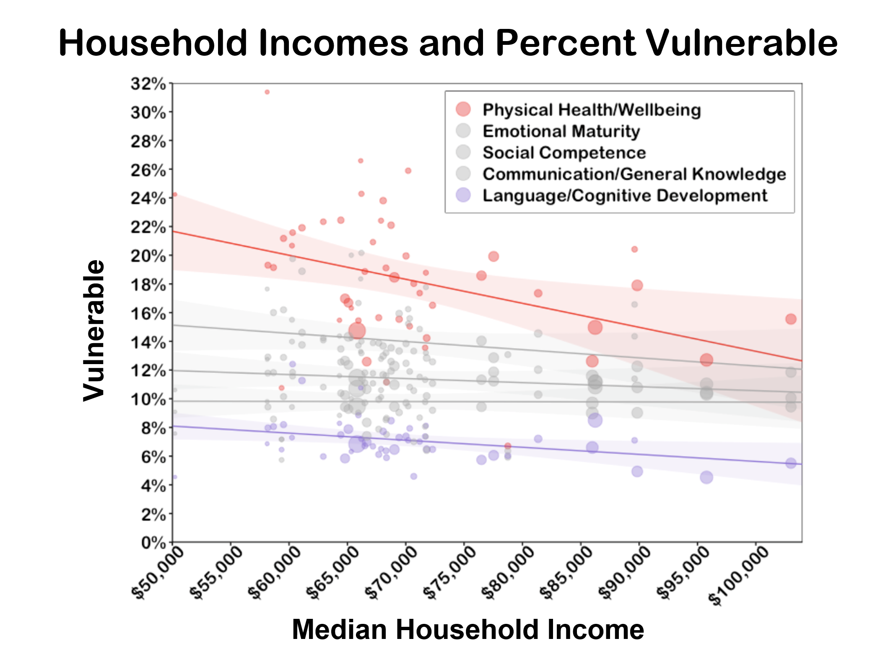

Policy DataFest 2020
In February, 2020, I participated in the University of Waterloo Policy DataFest, a multidisciplinary "hackathon" for graduate students, along with my lab mates Megan Kelly, Xinyi Lu, and April Pereira. Among 16 participating teams, our team placed second in the event.
Each participating team is assigned a real-world question and given 24 hours to use existing datas to answer this question and, in turn, provide policy recommendations. The topic we were assigned was "Are the percentage of vulnerable children in early development skills higher in low socio-economic areas?" To answer this question, we leveraged datasets from the Ontario Ministry of Education and the Canadian Census.
We found that socioeconomic status within each census division indeed predicted school readiness at the first grade level, primarily in the areas of language/cognitive development and physical health/wellbeing.

Consistent with previous research, boys tended to be more at risk than girls across the board.
 However, what was interesting was that we found that across the last four census cycles, the relation between SES and school readiness seems to be decreasing over time, suggesting that policies implemented between 2001 and 2016 may have been successful in reducing this gap.
A more comprehensive breakdown of our findings can be found in our presentation as well as on my RPubs page.
However, what was interesting was that we found that across the last four census cycles, the relation between SES and school readiness seems to be decreasing over time, suggesting that policies implemented between 2001 and 2016 may have been successful in reducing this gap.
A more comprehensive breakdown of our findings can be found in our presentation as well as on my RPubs page.